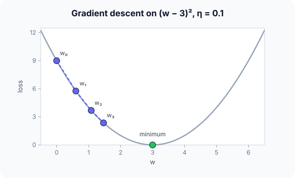

Prerequisites
- Derivatives: the slope of a function.
- Loss functions.
- Backpropagation, which supplies the gradients.
The analogy
Everyday analogy
Imagine walking down a hill in thick fog. You can only feel the slope under your feet, so you take a step in the steepest downhill direction, feel again, and repeat until the ground is flat.
Gradient descent does the same on the loss surface: the gradient is the slope, and the learning rate is the size of your steps.
How it works
Update rule: $w \leftarrow w - \eta \, \nabla L(w)$, with learning rate $\eta > 0$. Here $L(w) = (w - 3)^2$, so $\nabla L(w) = 2(w - 3)$.
Start with two steps by hand
$f(w) = (w - 3)^2$, start $w_0 = 0$, learning rate $\eta = 0.1$. Predict, then open "Check".
Example: predict before you read
Step 1. Compute the gradient at $w_0 = 0$ and the first update.
Check
Gradient $2(0 - 3) = -6$. $w_1 = 0 - 0.1 \cdot (-6) = 0.6$.
Step 2. Cover the next line and guess: the second step.
Check
Gradient $2(0.6 - 3) = -4.8$. $w_2 = 0.6 + 0.48 = 1.08$.
Step 3. How far from the minimum are $w_0$, $w_1$, $w_2$? Spot the pattern.
Check
3, 2.4, 1.92: each step shrinks the distance by the same factor, 0.8.

Quick recall: Before reading further, cover the text above and say out loud: why do we step against the gradient?
Check your answer
The gradient points uphill (the direction of steepest increase), so its opposite is the steepest way down.
Finish the picture: the learning rate
Same function and start, different learning rates.
- $\eta = 0.5$. Predict $w_1$.
Check
$w_1 = 0 - 0.5 \cdot (-6) = 3$: the minimum in one step (lucky for this exact function).
- $\eta = 1.1$. Predict $w_1$ and $w_2$.
Check
$w_1 = 6.6$ (overshoots to the other side), $w_2 = 6.6 - 1.1 \cdot 7.2 = -1.32$: the distance from 3 grows (3.6, then 4.32). It diverges.
Quick recall: Without scrolling up, say out loud: what happened with learning rate 1.1?
Check your answer
Each step overshot the minimum by more than it started with, so $w$ bounced back and forth further and further away: it diverged.
Full worked calculation
Five full steps of gradient descent on $f(w) = (w - 3)^2$ from $w = 0$ with learning rate $\eta = 0.1$, then the same start with $\eta = 0.5$ and $\eta = 1.1$ to see what the learning rate does.
| Step | $w$ | $f(w)$ | Gradient $2(w - 3)$ | Step $-\eta \cdot$ grad | Distance to 3 |
|---|---|---|---|---|---|
| 0 | 0 | 9 | −6 | +0.6 | 3 |
| 1 | 0.6 | 5.76 | −4.8 | +0.48 | 2.4 |
| 2 | 1.08 | 3.686 | −3.84 | +0.384 | 1.92 |
| 3 | 1.464 | 2.359 | −3.072 | +0.307 | 1.536 |
| 4 | 1.771 | 1.510 | −2.458 | +0.246 | 1.229 |
| 5 | 2.017 | 0.966 | −1.966 | +0.197 | 0.983 |
-
1Gradient at the start
$$f'(w) = 2(w - 3) \;\Rightarrow\; f'(0) = -6$$The derivative is the slope. Negative means the function goes down to the right, so we should increase $w$.
-
2First step
$$w_1 = w_0 - \eta f'(w_0) = 0 - 0.1 \cdot (-6) = 0.6, \qquad f(0.6) = 2.4^2 = 5.76$$We move against the slope, by 10% of its value. The loss falls from 9 to 5.76.
-
3Second step
$$f'(0.6) = 2(0.6 - 3) = -4.8, \qquad w_2 = 0.6 + 0.48 = 1.08$$The slope is gentler now, so the step is smaller (0.48 instead of 0.6), even though $\eta$ did not change. Steps shrink automatically as we approach the bottom.
-
4The pattern
$$w_{t+1} - 3 = (w_t - 3) - 0.1 \cdot 2(w_t - 3) = 0.8\,(w_t - 3)$$Every step multiplies the distance to the minimum by 0.8: 3, 2.4, 1.92, 1.536… After 5 steps we are at 2.017, still 0.98 away; after 30 steps we would be within 0.004.
-
5A larger learning rate: η = 0.5
$$w_1 = 0 - 0.5 \cdot (-6) = 3 \quad\Rightarrow\quad \text{the minimum in one step}$$Here the factor is $1 - 2 \cdot 0.5 = 0$. That is luck of a perfectly quadratic function; on real losses no single $\eta$ jumps straight to the answer.
-
6Too large: η = 1.1
$$\text{factor } 1 - 2.2 = -1.2: \quad w = 0 \to 6.6 \to -1.32 \to 8.18 \to \ldots$$Each step overshoots to the other side and lands farther away (distance 3, 3.6, 4.32, 5.18). The loss grows instead of falling: divergence. If your training loss explodes, lower the learning rate first.
What the numbers tell us
Gradient descent repeats $w \leftarrow w - \eta f'(w)$. With $\eta = 0.1$ the error shrinks by 20% per step; with $\eta = 1.1$ it grows by 20% per step.
The learning rate is the most important setting: too small is slow, too large diverges. Try values like 0.1, 0.01, 0.001 and watch the loss curve.
The rule in plain words
Start from an initial $w$. Repeat: compute the gradient of the loss at $w$, then update $w \leftarrow w - \eta \nabla L(w)$.
Stop when the gradient is tiny or the loss stops improving. Too small an $\eta$ is slow; too large overshoots or diverges.
Quick recall: Before you read the code, describe the gradient-descent loop in your own words. Then check below.
Check your answer
Repeat: compute the gradient at the current $w$, multiply it by the learning rate, subtract that from $w$.
The code
Read this code after you have done the two steps by hand. It will make more sense.
double grad_f(double w) { return 2 * (w - 3); } /* derivative of (w - 3)^2 */
double gradient_descent(double w, double lr, int steps) {
for (int t = 0; t < steps; t++)
w -= lr * grad_f(w); /* step against the slope */
return w;
}Definition
What you just did, in one line: gradient descent minimises a function by repeatedly moving the parameters a small step in the direction opposite to the gradient: $w \leftarrow w - \eta \nabla L(w)$.
flowchart TD
A["start with some w"] --> B["compute the gradient g = dL/dw"]
B --> C["w = w - learning rate × g"]
C --> D{"loss still decreasing / gradient not tiny?"}
D -->|yes| B
D -->|no| E["stop: (local) minimum reached"]
Putting numbers on it
Quick recall: Before looking at the formula, predict: why do the steps get shorter as $w$ approaches 3, even with a fixed learning rate?
Check your answer
The step is learning rate × gradient, and the gradient $2(w - 3)$ shrinks to 0 near the minimum.
For this function, one step shrinks the distance to the minimum by a constant factor:
$$w_{t+1} - 3 = (1 - 2\eta)(w_t - 3) \quad\Longrightarrow\quad \eta = 0.1: \text{factor } 0.8, \qquad \eta > 1: |\text{factor}| > 1 \text{ (diverges)}$$| Learning rate $\eta$ | Factor $1 - 2\eta$ | Behaviour |
|---|---|---|
| 0.01 | 0.98 | Converges very slowly |
| 0.1 | 0.8 | Converges smoothly |
| 0.5 | 0 | Exact minimum in one step |
| 0.9 | −0.8 | Converges, but zig-zags across the minimum |
| 1.1 | −1.2 | Diverges |
Warning
Gradient descent only finds a point where the gradient is zero. On non-convex losses, like those of neural networks, that can be a local minimum or a saddle point, not the global minimum.
Exam tip
Write the update rule, compute the gradient numerically, and do two or three steps in a small table: $t$, $w_t$, gradient, $w_{t+1}$. Then comment on the learning rate.
Common mistakes
- Adding the gradient instead of subtracting it (gradient ascent).
- Choosing a learning rate so large that the loss oscillates or explodes.
- Assuming the result is the global minimum on a non-convex loss.
Try it yourself
Exercise 1 (warm-up)
Minimise $f(w) = w^2$ from $w_0 = 4$ with $\eta = 0.25$. Give $w_1$ and $w_2$.
Hint
$f'(w) = 2w$.
Answer
$w_1 = 4 - 0.25 \cdot 8 = 2$, $w_2 = 2 - 0.25 \cdot 4 = 1$: halving each step.
Exercise 2 (a bit harder)
Fit $\hat y = wx$ to one point $(x, y) = (2, 4)$ with loss $L = (wx - y)^2$, starting at $w = 0$, $\eta = 0.05$. Do two steps. Write your answer down before you open it.
Show answer
$\partial L/\partial w = 2(wx - y)x$. At $w = 0$: $2(-4)(2) = -16$, so $w_1 = 0.8$. At $0.8$: $2(1.6 - 4)(2) = -9.6$, so $w_2 = 1.28$, heading towards 2.
Did you know?
Did you know?
Augustin-Louis Cauchy proposed gradient descent in 1847 to solve systems of equations in astronomy.
Training a large language model takes hundreds of thousands of gradient steps, each one the same update rule applied to billions of weights at once.
Key points to remember
If you remember one thing from each line, remember the because.
- Stepping against the gradient lowers the loss because the gradient points in the direction of steepest increase.
- Steps shrink near the minimum because the gradient approaches 0 there.
- Too large a learning rate diverges because each step overshoots by more than the previous distance.
- Too small a learning rate is slow because each step covers only a tiny part of the distance.
- It may stop at a local minimum because it only sees the local slope.
Self-check questions
Answer these in order, out loud. They follow the page, so your answers become the script of your video.
- How is gradient descent like walking down a hill in fog?
Sample answer
You only feel the slope under your feet, so you keep stepping in the steepest downhill direction until the ground is flat.
- Do two steps on $(w - 3)^2$ from $w = 0$ with $\eta = 0.1$.
Sample answer
Gradient −6, $w_1 = 0.6$; gradient −4.8, $w_2 = 1.08$.
- Why does the code use
w -= lr * grad_f(w)and not+=?A good answer says where the gradient points.
Sample answer
The gradient points uphill; subtracting it moves downhill, which lowers the loss.
- So what is gradient descent, in one sentence?
Sample answer
An optimisation method that repeatedly moves the parameters a small step against the gradient of the loss.
- Why does a learning rate of 1.1 diverge on this function?
A good answer uses the factor $1 - 2\eta$.
Sample answer
Each step multiplies the distance to the minimum by $1 - 2\eta = -1.2$, whose size is above 1, so the distance grows every step.
- What happens with learning rates 0.01, 0.1 and 0.5 here?
Sample answer
0.01 converges very slowly, 0.1 converges smoothly (factor 0.8), 0.5 reaches the minimum in one step.
- What can gradient descent get stuck in on a neural network's loss?
Sample answer
Local minima or saddle points, because it only uses local slope information.
- If you had to teach this to a friend in 2 minutes, what would you leave out, and why?
Sample answer
I'd leave out the factor formula and saddle points. I'd keep the foggy-hill analogy, the two steps from 0 to 1.08, and "step against the slope; the learning rate decides speed versus stability".
External resources
- 3Blue1Brown: Gradient descent: how neural networks learn, visually.
- Google ML Crash Course: Gradient descent: interactive learning-rate demo.
- Wikipedia: Gradient descent: theory and convergence.
Videos
- 3Blue1Brown: Gradient descent, how neural networks learn: chapter 2 of the deep learning series.